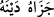

Hâfız der ki:
Ezel sabahından ebediyet akşamına dek
Dostluk ve sevgi, aynı ahd ve söz üzerinde olacaktır.
Nankörlük, îmânın zevâline sebeptir. Görmez misin, Bel‘am b. Bâûr, Allâh’ın
kendisini îmâna muvaffak kılmasına ve Rahmân’ın hidâyet vermesine bir gün
şükretmedi de sonunda îman ondan soyulup alındı. Böyle durumlardan Allah Teâlâ’ya
sığınırız!
33. Ey İnsanlar! Rabbinize karşı gelmekten sakının. Ne babanın evlâdı, ne evlâdın
babası nâmına bir şey ödeyemeyeceği günden çekinin. Bilin ki, Allâh’ın verdiği söz
gerçektir. Sakın dünyâ hayatı sizi aldatmazsın ve şeytan, Allâh’ın affına
güvendirerek sizi kandırmasın.
“Ey İnsanlar!” Bu hitap, mükelleflerin tümünedir. Aslında ise Mekke kâfirlerinedir.
“Rabbinize karşı gelmekten sakının.” Rabbinizin âzâbından ve hışmından sakının. Bu
sakınma küfürden, günahlardan ve Allâh’ın dışındaki şeylerden kaçınmakla gerçekleşir.
Âriflerden biri şöyle der: “Allah Teâlâ kullarını bazen fiilleriyle korkutur ve
“Fitneden sakının!” (el-Enfâl, 8/25) buyurur. Bazen sıfatlarıyla korkutur ve “O
inkârcı acaba Allâh’ın olup biten her şeyi gördüğünü bilmedi mi?” (el-Alak, 96/14)
buyurur. Bazen de zâtıyla korkutur ve “Allah, kendine karşı gelmekten sizi
sakındırıyor.” (Âl-i İmrân, 3/30) buyurur.”
“Ne babanın evlâdı, ne evlâdın babası nâmına bir şey ödeyemeyeceği” yâni babanın
çocuğu adına borçlarından bir şey ödeyemeyeceği, günahlarını üstlenemeyeceği ve ona
kendi sevaplarından veremeyeceği, aynı şekilde çocuğun da babası için bahsedilen bu
hususlardan hiçbirini yapamayacağı, babanın oğlundan azabı uzaklaştıramayacağı o
“günden” kıyâmet gününden “çekinin.” korkun.
et-Teysîr’de der ki: “Gün” kelimesinin zâhirdeki anlamı üzere olması mümkündür
Çünkü kıyâmet günü, korkunç/korkulan bir gündür.
“
” içinde tazim bulunan bir korkudur. Daha çok korkulan şey hakkında sâhip
olunan bilgiden kaynaklanır.
“
” o kimsenin borcunu ödedi, demektir. el-Müfredât’ta ise şöyle der: “
”